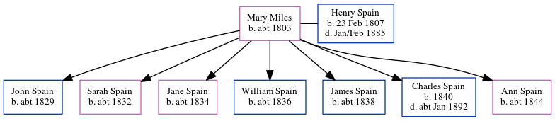

Mary Spain (née Miles) c1803 -
[ Home ] | [ Calendar ] | [ Surnames Index ] | [ Census Index ] | [ Family History ]Mary Miles, the wife of Henry Spain (the three times great-uncle of Nigel Horne), was born in Monkton, Kent, England c. 18031,2,3,4 and married Henry (an agricultural laborer with whom she had 7 children: John, Sarah, Jane, William, James Robert, Charles Henry and Ann) at St Mary Magdalene in Monkton on Feb 10, 18275 (From Barry White's data).
During her life, she was living in St Nicholas-at-Wade, Kent, England on Mar 30, 18516, in 18612 and on Apr 2, 18717; and at The Street in St Nicholas-at-Wade on Apr 3, 18818.
Children
- John was born c. 1829
- Sarah was born c. 1832
- Jane was born c. 1834
- William was born c. 1836
- James Robert was born c. 1838
- Charles Henry was born in 1840
- Ann was born c. 1844
Citations
- 1851 England Census Online publication - Provo, UT, USA: The Generations Network, Inc., 2005.Original data - Census Returns of England and Wales, 1851. Kew, Surrey, England: The National Archives of the UK (TNA): Public Record Office (PRO), 1851. Data imaged from the National
- 1861 England Census Online publication - Provo, UT, USA: The Generations Network, Inc., 2005.Original data - Census Returns of England and Wales, 1861. Kew, Surrey, England: The National Archives of the UK (TNA): Public Record Office (PRO), 1861. Data imaged from the National
- 1871 England Census Online publication - Provo, UT, USA: The Generations Network, Inc., 2004.Original data - Census Returns of England and Wales, 1871. Kew, Surrey, England: The National Archives of the UK (TNA): Public Record Office (PRO), 1871. Data imaged from the National
- 1881 England Census Online publication - Provo, UT, USA: The Generations Network, Inc., 2004. 1881 British Isles Census Index provided by The Church of Jesus Christ of Latter-day Saints © Copyright 1999 Intellectual Reserve, Inc. All rights reserved. All use is subject to the
- Kent, Canterbury Archdeaconry Marriages - Findmypast
- 1851 England, Wales & Scotland Census - Findmypast (was age 46 and the wife of the head of the household)
- 1871 England, Wales & Scotland Census - Findmypast (was age 67 and the wife of the head of the household)
- 1881 England, Wales & Scotland Census - Findmypast (was age 78 and the wife of the head of the household)
Media
1851 England, Wales & Scotland Census Transcription - GBC-1851-0005871660
1871 England, Wales & Scotland Census - GBC/1871/0014271841
1881 England, Wales & Scotland Census - GBC/1881/0004821302
Family Tree
Generated by ged2site. Last updated on Jun 11, 2024